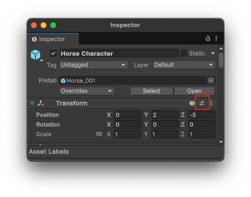
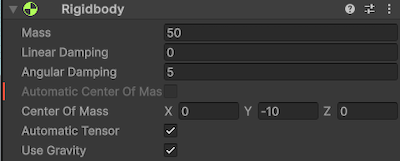

You can apply the settings of a preset asset to a component, asset, or project setting in the following ways:
Note: Applying a preset copies properties from the preset to the item. It doesn’t link the preset to the item. Changes you make to the preset don’t affect the items you have previously applied the preset to.
To apply a preset via the Select Preset window:

Selecting the icon opens the Select Preset window. Use this window to search for and select the preset to apply.
You can drag a preset asset onto a GameObject to apply the setting. How Unity applies the settings depends on the state of the GameObject and where you drop the asset in the Unity Editor:
| Editor location | Preset behavior |
|---|---|
| An existing GameObject in the Hierarchy window | Unity adds a new component and copies properties from the preset asset. |
| An empty area in the Hierarchy window. | Unity creates a new, empty GameObject and adds a component with properties copied from the preset. |
| The title of an existing component in the Inspector window. | Unity copies properties from the preset. |
| An empty area in the Inspector window | Unity adds a new component and copies properties from the preset. |
You can choose to only apply some properties from a preset and exclude others. To do this:
Select the preset in the ProjectIn Unity, you use a project to design and develop a game. A project stores all of the files that are related to a game, such as the asset and Scene files. More info
See in Glossary window.
In the InspectorA Unity window that displays information about the currently selected GameObject, asset or project settings, allowing you to inspect and edit the values. More info
See in Glossary, right-click a property and choose Exclude Property. The window displays a red horizontal line next to excluded properties.

Apply the preset to the target component, asset, or Project Settings.
Note: To select all or clear all checkboxes in a preset, select the More menu (⋮) or right-click the preset name, and select Include all properties or Exclude all properties. You can still adjust individual properties if you need to.
You can also use the Exclude option for presets that you then set as the default configuration for components and asset importers. For more information, refer to Set default preset assets.